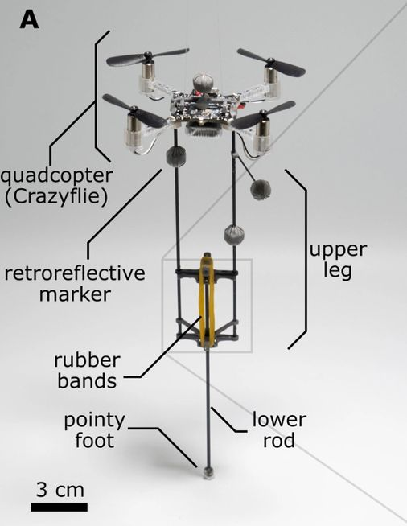
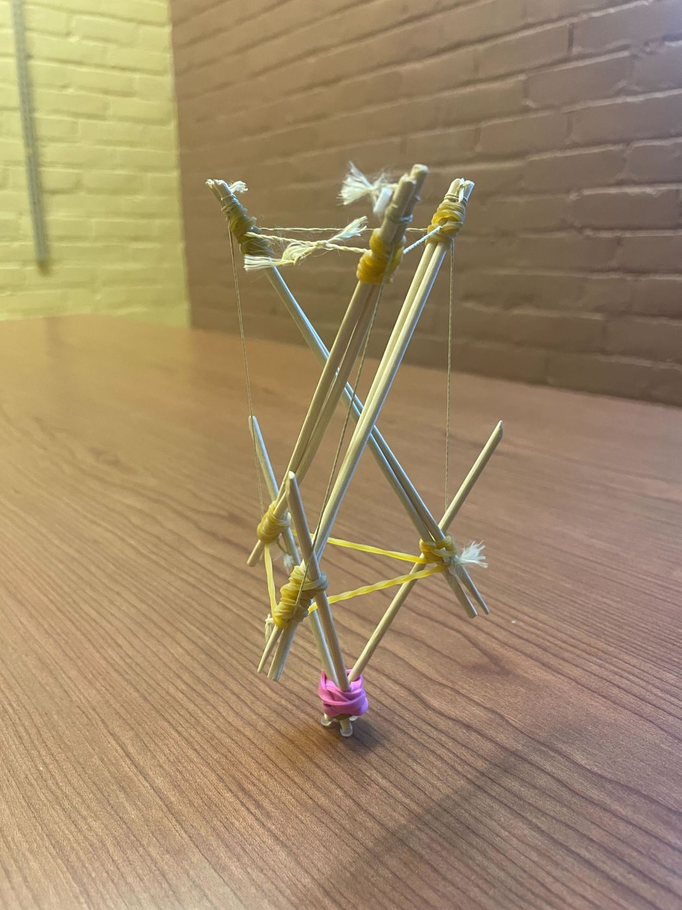
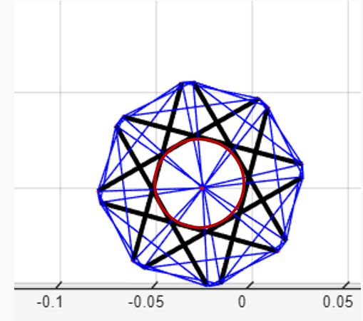
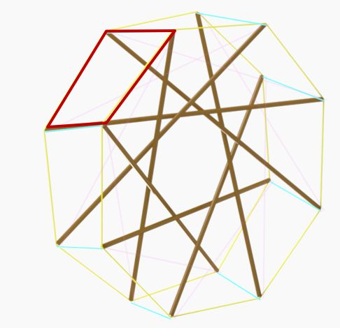

Undergraduate thesis · CLIMB Lab, Prof. Pakpong Chirarattananon · Sep 2026 – Apr 2027 · In progress
Hopcopter: hop-and-roll tensegrity locomotion
Background
A micro-quadcopter can drain its battery in about 6 minutes of hovering. The Hopcopter stretches that by hopping: a passive, rubber-band-loaded telescopic leg stores landing energy and returns it on rebound, and the thrusters only make up what's lost. The catch is the single 1-DOF leg. To land at the right angle, the whole airframe has to tilt aggressively, and steep landings can slip and collapse the robot.
What my thesis does
- Replaces the single leg with a multi-legged Class-1 tensegrity structure: carbon struts held in a web of Kevlar and elastomer tendons. Its landing attitude is decoupled from the body, and it can take impacts from any direction.
- Lets the robot roll from leg to leg between hops, so it keeps moving after a hard landing instead of crashing.
- Built on the lab's RK4 MATLAB tensegrity engine, which models each strut as a 6-DOF rigid body with damped tendon forces, ground contact and friction. I set the single-hop baseline and am extending it to multi-hop rolling.
- Next: a learned dynamics model trained on simulated and experimental data to plan hop trajectories and landing control.
0.73coefficient of restitution at a 3.5 m/s landing (simulation baseline)
~6 mintypical micro-quad hover endurance, the limit hopping is meant to beat
8 + 1strut tensegrity wheel concept: an 8-strut rim around a payload axle hung on elastomers




Background figures from the CLIMB Lab Hopcopter project and the lab's summer 2026 tensegrity research.